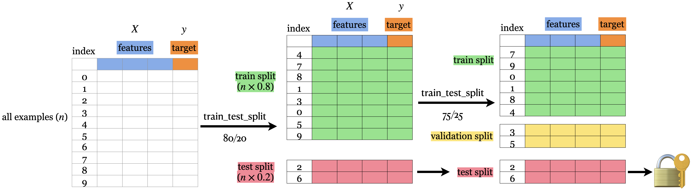

Purpose
Fundamental goal of ML: To generalize beyond what we see in the training samples
We often have access to only limited amount of training data, but we want to learn a mapping function which would predicts target reasonably well beyond that training data
However, it’s impossible to access generalization error in practice!
Solution (a common way): To reduce and approximate this error by Data Splitting
How?
80%-20% train-test split
prepare df
import pandas as pd= pd.read_csv("data/canada_usa_cities.csv" )
0
-130.0437
55.9773
USA
1
-134.4197
58.3019
USA
2
-123.0780
48.9854
USA
3
-122.7436
48.9881
USA
4
-122.2691
48.9951
USA
...
...
...
...
204
-72.7218
45.3990
Canada
205
-66.6458
45.9664
Canada
206
-79.2506
42.9931
Canada
207
-72.9406
45.6275
Canada
208
-79.4608
46.3092
Canada
209 rows × 3 columns
from sklearn.model_selection import train_test_split= df.copy()= df_1.pop("country" ), df_1= train_test_split(= 0.2 , random_state= 123
alternative method (in case of performing exploratory data analysis or visualization on the df_train)
= train_test_split(= 0.2 , random_state= 123 # # or, via train_size, # df_train, df_test = train_test_split( # df, train_size=0.8, random_state=123 # ) = df_train.pop("country" ), df_train= df_test.pop("country" ), df_test
visualize training data
import mglearnimport matplotlib.pyplot as plt'longitude' ], X_train['latitude' ], y_train, s= 12 )'longitude' )'latitude' )
from sklearn.tree import DecisionTreeClassifier= DecisionTreeClassifier()print (f"Train accuracy: { round (clf.score(X_train, y_train), 3 )} " )print (f"Test accuracy: { round (clf.score(X_test, y_test), 3 )} " ) # ~ generalization error
Train accuracy: 1.0
Test accuracy: 0.738
Cons
Approximated the generalization error, but not reduced yet.
We have built a perfect model on training data, but our model is not able to generalize well on the testing data!
Train-validation-test split
We train our model using train split
And score it using validation split
If the score is not good, then we train another model using train split and score it again using validation split
Repeat the process until reaching a satisfactory score in the validation split (i.e. hyperparameter tuning)
Test the model once to examine the generalization 
Train
✔️
✔️
✔️
Validation
✔️
✔️
Test
once
once
Deployment
✔️
from sklearn.model_selection import train_test_splitfrom sklearn.tree import DecisionTreeClassifier # example # data split = train_test_split(= 0.2 , random_state= 123 = train_test_split(= 0.25 , random_state= 123 = df_train.pop("country" ), df_train= df_validation.pop("country" ), df_validation= df_test.pop("country" ), df_test# (iteratively) train model and score for depth in range (1 , 7 ):= DecisionTreeClassifier(max_depth= depth)#print(f"Train accuracy (max_depth={depth}): {round(clf.score(X_train, y_train), 3)}") print (f"Validation accuracy (max_depth= { depth} ): { round (clf.score(X_validation, y_validation), 3 )} " )# test model = DecisionTreeClassifier(max_depth= 5 )print (f"Test accuracy: { round (clf.score(X_test, y_test), 3 )} " ) # ~ generalization error
Validation accuracy (max_depth=1): 0.81
Validation accuracy (max_depth=2): 0.81
Validation accuracy (max_depth=3): 0.833
Validation accuracy (max_depth=4): 0.833
Validation accuracy (max_depth=5): 0.905
Validation accuracy (max_depth=6): 0.881
Test accuracy: 0.762
We typically expect \(E_{train} < E_{validation} < E_{test} < E_{deployment}\) .
Pros
Able to reduce and approximate generalization error
Much better than Train-test split, in which we have only examined the training accuracy before looking at testing.
Cons
If the data set is small, then the validation set will be tiny and will not be a good representative of testing set.
Cross-validation
Split the training data into k-fold
Each “fold” takes turn to be a validation set
Validation score statistics = mean/variance of each cross-validation score (scores across folds)
training and validation
from sklearn.model_selection import cross_validatefrom sklearn.tree import DecisionTreeClassifier # example # data split = train_test_split(= 0.2 , random_state= 123 = df_train.pop("country" ), df_train= df_test.pop("country" ), df_test# train model and score = DecisionTreeClassifier(max_depth= 4 )= cross_validate(clf, X_train, y_train, cv= 10 , return_train_score= True ) # is a dictionary
0
0.002524
0.002084
0.764706
0.913333
1
0.002855
0.002135
0.823529
0.906667
2
0.001225
0.000673
0.705882
0.906667
3
0.001533
0.000713
0.941176
0.900000
4
0.000889
0.000631
0.823529
0.906667
5
0.000849
0.000594
0.823529
0.913333
6
0.001619
0.000639
0.705882
0.920000
7
0.001016
0.000566
0.937500
0.900662
8
0.000744
0.000459
0.937500
0.900662
9
0.000704
0.000463
0.937500
0.900662
print (f"Average cv scores: { round (scores['test_score' ].mean(), 2 )} " )print (f"SD of cv scores: { round (scores['test_score' ].var()** 0.5 , 2 )} " )
Average cv scores: 0.84
SD of cv scores: 0.09
training, validation and testing
from sklearn.model_selection import cross_validatefrom sklearn.tree import DecisionTreeClassifier # example # data split = train_test_split(= 0.2 , random_state= 123 = df_train.pop("country" ), df_train= df_test.pop("country" ), df_test# (iteratively) train model and score for depth in range (1 , 7 ):= DecisionTreeClassifier(max_depth= depth)= cross_validate(clf, X_train, y_train, cv= 10 , return_train_score= True ) # is a dictionary print (f"Average cv scores (max_depth= { depth} ): { round (scores['test_score' ].mean(), 3 )} " )print (f"SD of cv scores (max_depth= { depth} ): { round (scores['test_score' ].var()** 0.5 , 3 )} \n " )# test model = DecisionTreeClassifier(max_depth= 5 )print (f"Test accuracy: { round (clf.score(X_test, y_test), 3 )} " ) # ~ generalization error, comparable to cv error
Average cv scores (max_depth=1): 0.81
SD of cv scores (max_depth=1): 0.085
Average cv scores (max_depth=2): 0.804
SD of cv scores (max_depth=2): 0.086
Average cv scores (max_depth=3): 0.804
SD of cv scores (max_depth=3): 0.09
Average cv scores (max_depth=4): 0.84
SD of cv scores (max_depth=4): 0.09
Average cv scores (max_depth=5): 0.846
SD of cv scores (max_depth=5): 0.083
Average cv scores (max_depth=6): 0.815
SD of cv scores (max_depth=6): 0.061
Test accuracy: 0.833
Pros
More powerful, also applied to small data set!
Able to examine the variation in the scores across folds
Give a more robust estimate of error on unseen data